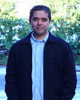
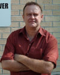
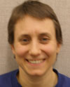
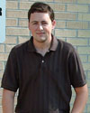

| Director | Assistant Director | ||
|
Professor Alexander Mamishev Phone: (206) 221-5729 Fax: (206) 543-3842 E-Mail: | 
|
Professor Kai Strunz Phone: (206) 543-2386 Fax: (206) 543-3842 E-Mail: | 
|
| Graduate Researchers | |||
|
Ryan C. Campbell PhD Program Grid-Connected Renewable Energy Systems E-Mail: |
Abhinav S. Mathur MS Program Estimation of Material Properties Using Fringing Field Impedance Spectroscopy E-Mail: |  | |
|
Kishore S. Rajan PhD Program Material Imaging with Fringing Electric Field Dielectrometry E-Mail: | |||
| Undergraduate Researchers | |||
|
Dan Hemmons BSEE Program Power, Controls, and Robotics Power System Control & Diagnostics E-Mail: |  < |
Gina Hicks BSEE and BSME Program Renewable Energy Energy Efficiency and Sustainability E-Mail: |  |
|
Luke Kearney BSEE Program Control Systems and Embedded Systems E-Mail: |  |
Hussein Yapit BSEE Program E-Mail: | |